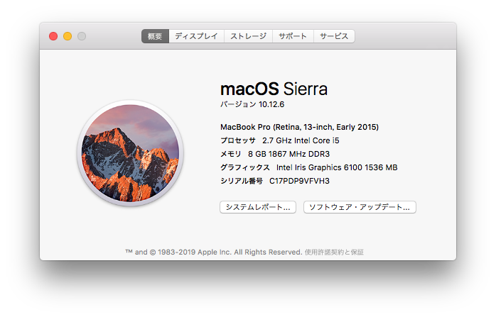
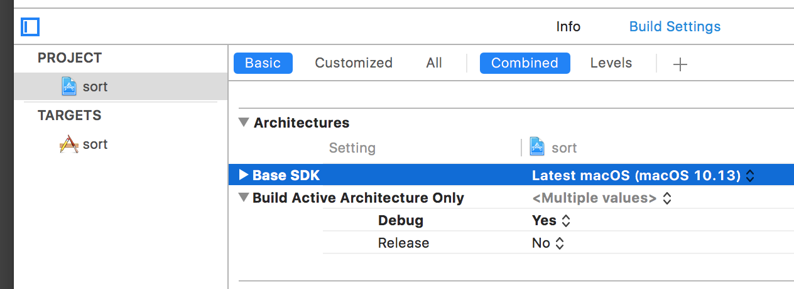
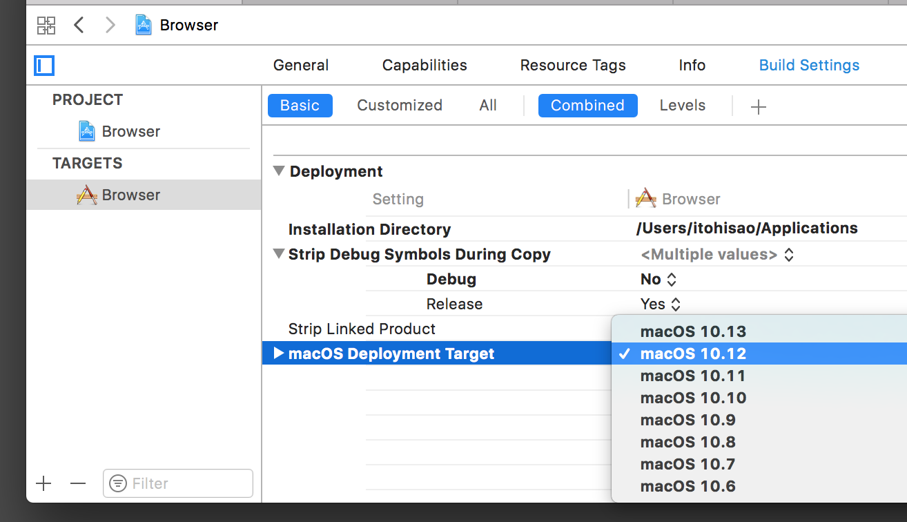
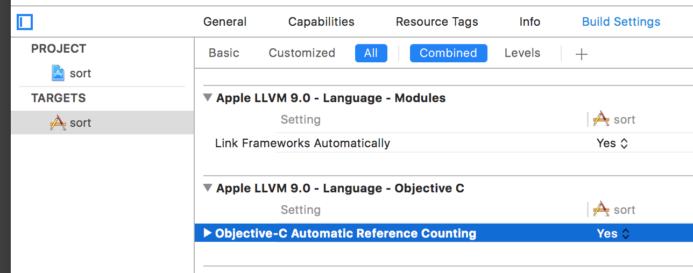

OS 10.6で作成したアプリを10.12で動かす
macOS Ver10.6の環境で作成したアプリケーションをVer10.12の環境で動かすために必要なこと。

Base SDK (software development kit)
SDKのバージョンを最新の10.13にする。（当方のOSのバージョンは、10.12.6だが、SDKは10.13になる）

macOS Deployment Target
アプリケーションが動作するOSのバージョンを10.12にする。（これより上位のバージョンで動作可能）
上記のBaseSDKのバージョンを変更すると、このバージョンも自動的に同じバージョンに変更される。
SDKを10.13にすると、ここも10.13になり、当方のOSのバージョンの10.12.6より高くなってしまい正しく動作しない。

Automatic Reference Counting(ARC)
YESを指定し、メモリ管理をARCで行うようにする。合わせてソースコードの修正も行う。

補足
最新のOSで作成したアプリケーションを古いOSで実行するときの注意
古いOSのバージョンでは、ARCがサポートされない。プログラムによるメモリ管理（retain/release）を行う必要がある、
10.5 X
10.6 ◯ ただし、weak はサポートしない。
10.7 ◯
ARCをオンにして、Deployment Targetを 10.6にした場合、プログラムでプロパティにweakを指定していると、コンパイルでエラーになる。
Cannot synthesize weak property because the current deployment target does not support weak references